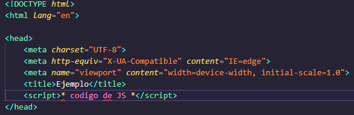
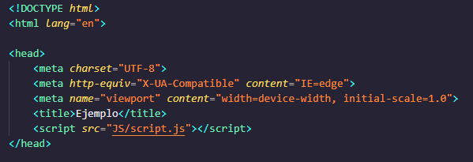
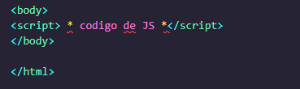
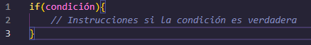
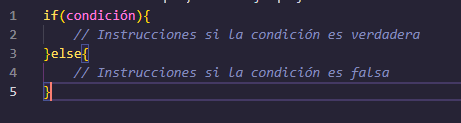
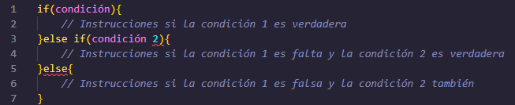
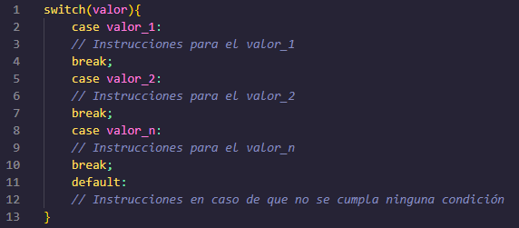
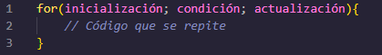
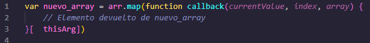

Investigación de JavaScript
¿Qué versiones de JavaScript hay en el mercado?.
- Mocha (1995)
- LiveScript (1995)
- JavaScript(1995)
- ECMA1-ES1 (1997-1997)
- ES3 (1999)
- ES4(2008)
- ES5(2009)
- ES5.1(2011)
- ES6 (2012)
- ES7 (2016)
- ES8 (2017)
- ES9 (2018)
- ES10 (2019)
- ES11 (2020)
- ECMAScript
¿Cómo se integra JavaScript a HTML?.
Solo hay tres formas de integrar JS a HTML y son:
- La primera es adentro de la etiqueta head, como si fuera una etiqueta básica de HTML. Ejemplo:

- La segunda se le llama archivo externo, se usa con el atributo "src", dentro de este atributo se pone la ruta del archivo de JS. Tambien es utilizado dentro del head. Ejemplo:

- La tercera es adentro de la etiqueta body como si fuera un etiqueta básica de HTML. Ejemplo:

¿Cómo es el manejo de las variables, tipos de datos y expresiones regulares en JS?.
Una variable es un elemento de datos con nombre cuyo valor puede cambiar durante el curso de la ejecución de un programa, en JS hay 3 variables básicas:
- Var: Las variables var pueden ser modificadas y re-declaradas dentro de su ámbito
- Let: las variables let pueden ser modificadas, pero no re-declaradas
- Const: las variables const no pueden ser modificadas ni re-declaradas.
JavaScript tiene la característica de ser un lenguaje débilmente tipado con tipado dinámico, es decir, que todos los tipos de datos se pueden asignar o reasignar a las variables que los almacenan. Por ejemplo, una variable que almacena un dato numérico
puede posteriormente almacenar un dato de tipo booleano.
Las expresiones regulares son patrones que se utilizan para hacer coincidir combinaciones de caracteres en cadenas. En JavaScript, las expresiones regulares también son objetos.
¿Cómo son todas las formas de declaración de funciones en JS?.
Hay 7 formas de declarar una funcion:
- Function declaration:Este tipo de función se creará con la palabra reservada function, seguido obligatoriamente por un nombre, que identificará a nuestra función, una lista de parámetros entre paréntesis, y el símbolo de las llaves {}. Qué será
el que delimite el contenido de nuestro conjunto de sentencias.
- Function expression:La sintaxis para crear estas funciones es similar a la anterior. La única diferencia es que la definición de nuestra nueva función no comienza por instrucción function y el nombre de la función es opcional.Este tipo de funciones
las podemos almacenar en una variable. Lo cual nos permite utilizarlas en este ejemplo:
- IIFE (Immediately Invoked Function Expression): Para crear una función de este tipo deberemos crearla en un operador de agrupación (). Seguido de (), lo que posibilitará el interpretado directamente en el motor de JavaScript. Ejemplo:
- Shorthand method definition:Este forma de crear las funciones puede ser utilizado como método en la declaración de un objeto o en las clases de ES6. Para crear este tipo de función debemos asignar un nombre de función seguido de una lista
de parámetros entre paréntesis y los símbolos de llaves para delimitar el cuerpo de las instrucciones. Ejemplo:
- Arrow function: La forma de crear estas funciones es la siguiente: Primero definiremos la lista de parámetros, en caso de ser necesario, entre paréntesis seguido del símbolo => y las {} para indicar las instrucciones que se van a realizar.
Además de la sintaxis que es diferente a las anteriores este tipo de funciones tienen las siguientes características.
- -Las "arrow function" no crean su propio contexto al ejecutarse. Al contrario que las "function expression" o las "function declaration" que crea su propio contexto.
- Las "arrow function" son anónimas.
- El objeto arguments no se encuentra en el contexto de la función.
- Si al definir la función no utilizamos el símbolo de las llaves. La función devolverá como resultado de la función el resultado de la ejecución de la instrucción que hayamos indicado.
- Generator function:La sintaxis de estas funciones es igual a las "function declaration" o "function expression". Sólo debemos utilizar el símbolo * al comienzo de la definición de nuestra función. Otra diferencia de estas funciones es que
siempre retorna un objeto con la siguiente estructura cada vez que invoquemos a la función next(). Ejemplo
- Function constructor: Las funciones en Javascript, son funciones, y poseen el constructor Function. Por ello podremos crear una variable que invoque a un objeto Function. Cuando invoquemos a este objeto podremos enviar todos los argumentos
que deseemos. Los primeros n argumentos serán los parámetros de nuestra función y el último argumento será el código de nuestra función.
¿Cuáles son los operadores y conversión entre tipos?.
Hay dos tipos de conversión, la implícita y la explícita: En la implícita se convierte un tipo de dato de menor rango a un supertipo (tipo de dato de mayor rango); este tipo de conversión lo realiza el compilador, ya que no hay pérdida de datos si,
por ejemplo, se pasa un int (tipo entero) a long.
¿Cuáles son las estructura de control de JS?.
Existen varias estructuras de control distintas y cada una se utilizará en el momento oportuno.
Empecemos por la más usada de todas:
if/si:
La sentencia if especifica un bloque de código que se ejecuta si una condición es cierta y da la oportunidad de ejecutar otro bloque de código distinto si resulta que no es cierta. Su sintaxis es la siguiente:

Else/sino:
La parte de else es opcional, y especifica un bloque de código que se ejecuta si la condición es falsa.Su sintaxis es la siguiente:

Múltiples ELSE:
También puede darse el caso de que necesitemos varias cláusulas de rebote.Eso nos permite manejar distintas posibilidades en la misma estructura de control. Su sintaxis es la siguiente:

Switch/Según:
Se utiliza para hacer diferentes acciones basadas en diferentes condiciones.Consiste en darle un valor y comprobar si ese valor coincide con algún caso.En el caso que coincida, ejecutamos un bloque de código específico. Su sintaxis es la siguiente:

For/Por:
Nos permite ejecutar el código un número determinado de veces. Su sintaxis es la siguiente:
- inicialización: Se ejecuta antes de que empiece el bloque de código a repetir.
- condición: Define la condición por la que el bloque de código se va a ejecutar.
- actualización: Se ejecuta después de que acabe el bloque de código a repetir.

¿Qué es el objeto dom en JS? Y ¿Cómo trabaja?.
Las siglas DOM significan Document Object Model, o lo que es lo mismo, la estructura del documento HTML. Una página HTML está formada por múltiples etiquetas HTML, anidadas una dentro de otra, formando un árbol de etiquetas relacionadas entre sí,
que se denomina árbol DOM.
En Javascript, cuando nos referimos al DOM nos referimos a esta estructura, que podemos modificar de forma dinámica desde Javascript, añadiendo nuevas etiquetas, modificando o eliminando otras, cambiando sus atributos HTML, añadiendo clases, cambiando
el contenido de texto, etc...
Al estar "amparado" por un lenguaje de programación, todas estas tareas se pueden automatizar, incluso indicando que se realicen cuando el usuario haga acciones determinadas, como por ejemplo: pulsar un botón, mover el ratón, hacer click en una parte
del documento, escribir un texto, etc...
El DOM representa un documento HTML completo como un solo objeto. Para crear el DOM, el navegador web que lee el archivo HTML toma todas sus partes, desde el elemento
raíz hasta las etiquetas más pequeñas, y las devuelve como un objeto que el JavaScript comprende.
¿Qué función tiene en JS el Object Map?.
El método map() crea un nuevo array con los resultados de la llamada a la función indicada aplicados a cada uno de sus elementos. Ejemplo:

¿Cuáles son todos los eventos que trabaja JS?.
Los eventos que traba JS son los siguientes:
- onblur: Un elemento pierde el foco.
- onchange: Un elemento ha sido modificado.
- onclick:Pulsar y soltar el ratón.
- ondblclick:Pulsar dos veces seguidas con el ratón.
- onfocus:Un elemento obtiene el foco.
- onkeydown:Pulsar una tecla y no soltarla.
- onkeypress:Pulsar una tecla.
- onkeyup: Soltar una tecla pulsada.
- onload: Página cargada completamente.
- onmousedown: Pulsar un botón del ratón y no soltarlo.
- onmousemove:Mover el ratón.
- onmouseover: El ratón "entra" en el elemento.
- onmouseup: Soltar el botón del ratón.
- onreset: Inicializar el formulario.
- onresize: Modificar el tamaño de la ventana.
- onselect: Seleccionar un texto.
- onsubmit: Enviar el formulario.
- onunload: Se abandona la página, por ejemplo al cerrar el navegador.
Con toda la investigación que generaron. deben de generar un formulario que realice las siguientes funciones:
Qué obtenga los datos del input.
Podemos obtener el valor de la entrada sin envolverlo dentro de un elemento de forma en JavaScript seleccionando el elemento de entrada DOM y usando la propiedad value. JavaScript tiene diferentes métodos para seleccionar el elemento de entrada DOM. Cada método a continuación tendrá un ejemplo de código, que puede ejecutar en su máquina.
Qué verifique los datos que se ingresan en el input.
El manejador de eventos onsubmit de la etiqueta